STM32CubeMX实现串口通信
STM32CubeMX版本：6.10
在安装STM32CubeMX之前需要电脑上有Java环境
Java下载链接：https://javadl.oracle.com/webapps/download/AutoDL?BundleId=249203_b291ca3e0c8548b5a51d5a5f50063037
STM32CubeMX下载链接：https://www.st.com/zh/development-tools/stm32cubemx.html
Keil5(MDK-ARM)下载链接：https://pan.baidu.com/s/1kC7h3ljv1iENa0mSP2a0aQ?pwd=pxsy
串口调试助手：https://pan.baidu.com/s/1E5SprNfWX1yqPddtvsa8sw?pwd=e6vn
VSPD下载链接：https://www.xue51.com/soft/9349.html#xzdz
使用STM32CubeMX
安装固件库
若点击 Manage embedded software packages 后，出现失败，则需要随便点击其它任一选项，进行下载一些文件，比如点击 file->new project ，等下载后，再进行安装固件库。
1.进入嵌入式软件包管理界面
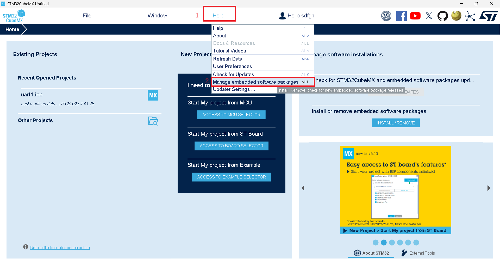
2.如果进入失败，则点击一下旁边的INSTALL/REMOVE，安装嵌入式软件包，如果提示登录的话，就将在ST官网注册的信息输入到CubeMX的登录框内进行登录，然后就可以接着安装了
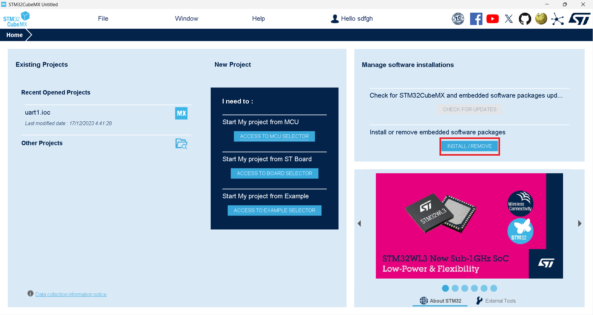
然后再次进行第一步的操作，这次就可以进入嵌入式软件包管理界面了，接着选择自己开发板的固件库，我这里是f1的。选择版本安装，我这里已经安装过了。
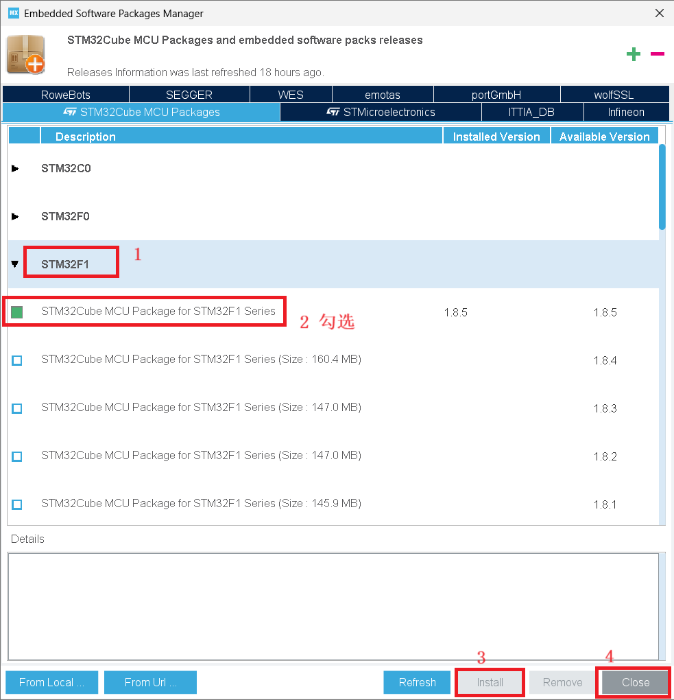
工程设置
1.点击 file -> new project 建立工程
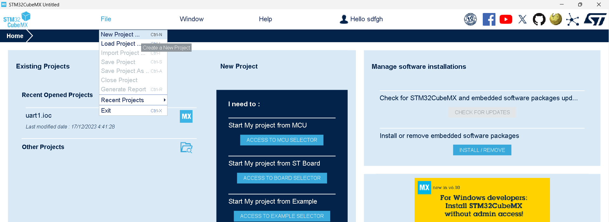
按步骤即可。搜索型号，选择合适的型号进行工程建立
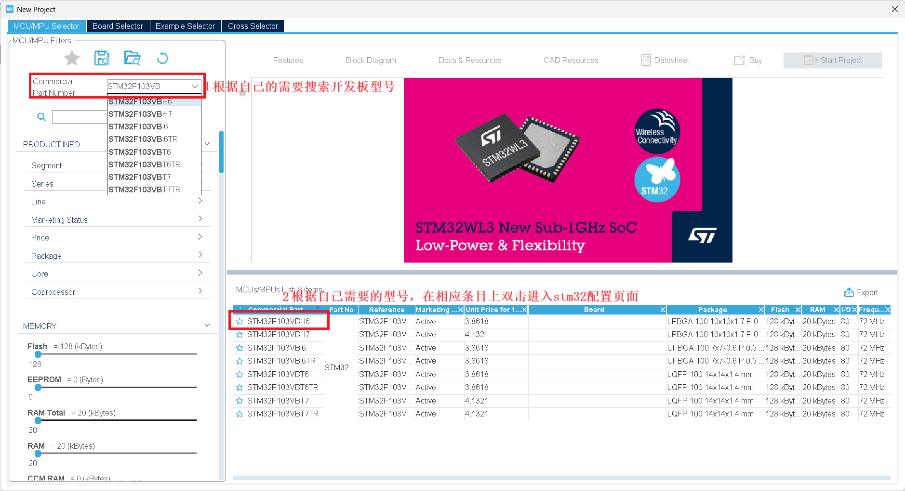
2.进行系统调试及基准时钟配置。
点击 System Core下拉栏中的 SYS。选择debug调试接口。我选择 serial Wire
SW模式就选择serial Wire。JTAG模式就选择JTAG，4pin和5pin的区别多了一个复位引脚
stlink调试就是SW模式，jlink调试就是JTAG模式
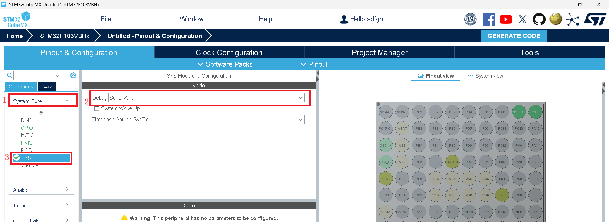
3.进行时钟RCC选项配置
点击 System Core下拉栏中的 RCC。可以都选外部晶振Crystal/Ceramic Resonator。
BYPASS Clock Source（旁路时钟源）
Crystal/Ceramic Resonator（石英/陶瓷 晶振）
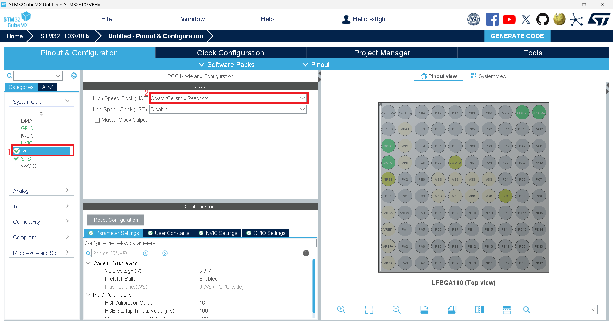
4.进行系统具体时钟配置
(1)点击“Clock Configuration”选项栏进入时钟树配置界面。
(2)选择外部时钟HSE 8MHz
(3)PLL锁相环倍频9倍（8*9=72）
(4)系统时钟来源选择为PLL
(5)设置APB1分频器为 /2
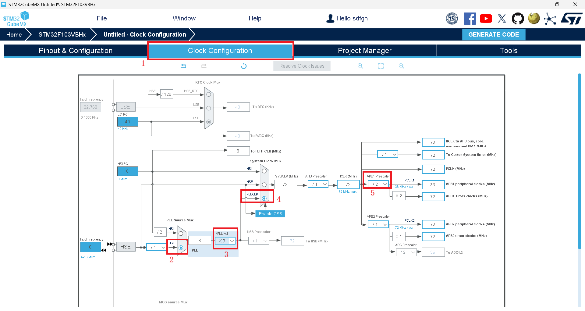
5.设置串口
这里选择USART1。串口配置的引脚为默认 PA6、PA7，无法手动更改。
第三步中 设置MODE为 异步通信(Asynchronous)
第四步中参数默认设置为 波特率为115200 Bits/s，传输数据长度为8 Bit，奇偶检验无，停止位1。以及下面未显示出的 接收和发送都使能
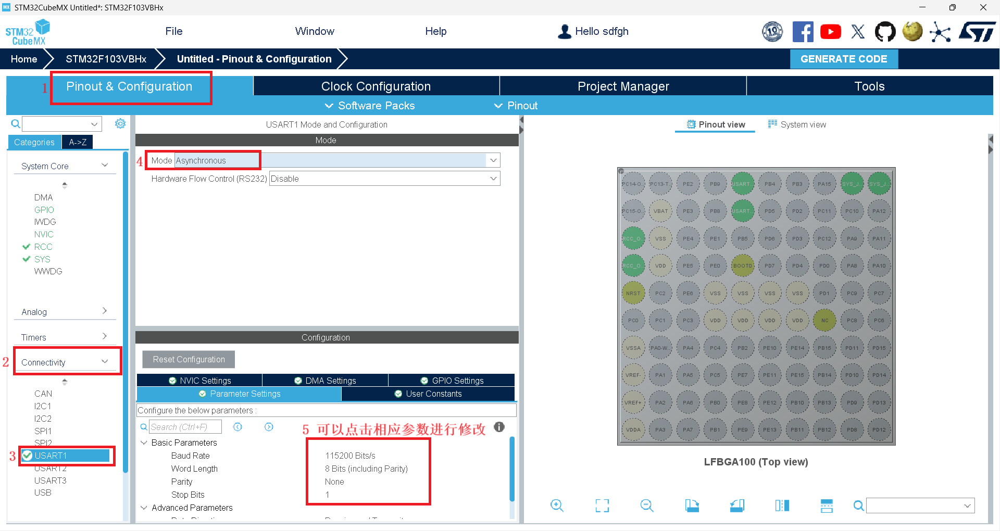
6.设置完成后，点击 Project Manager 选项，进入工程设置界面，选择 Project 选项。
不管工程名称还是路径都不要有中文，否则后面编译文件会出错。
Project Name：工程名称
Project Location：点击后面的"Browse"选择你想要将生成的工程保存到哪个目录里面。
Application Structure：应用程序结构
- Basic：是基础的结构，一般不包含中间件（RTOS、文件系统、USB设备等）
- Advanced：相反就是包含中间件，一般针对相对复杂一点的工程。
Toolchain/IDE：根据你用的编译软件进行选择 使用KEIL就选择keil的对应版本。不要高于版本
其他默认。
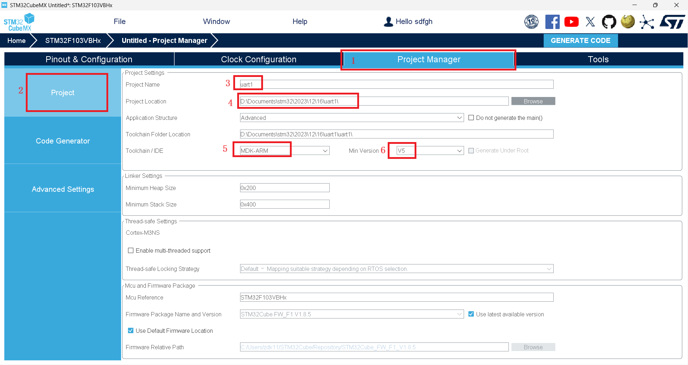
Code Generator 选项可以进行默认。这里我多勾选一个。
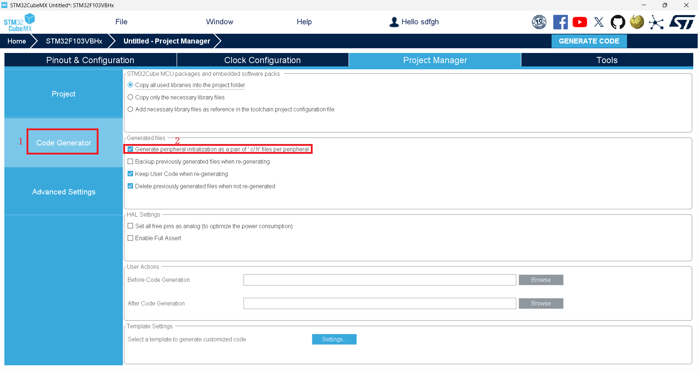
Code Generator 选项说明：
- copy all used libraries into the project folder：复制所有库文件（不管工程需要用到还是没用到）到生成的工程目录中，此做法可以使在不使用Cubemx或者电脑没有安装cubemx,依然可以按照标准库的编程习惯调用HAL库函数进行程序编写。
- Copy only the necessary library files： 只复制必要的库文件。这个相比上一个减少了很多文件。比如你没有使用CAN、SPI…等外设，就不会拷贝相关库文件到你工程下。
- Add necessary library files as reference in the toolchain project configuration file ：在工具链项目配置文件中添加必要的库文件作为参考。这里没有复制HAL库文件，只添加了必要文件（如main.c）。相比上面，没有Drivers相关文件。
- Generate peripheral initialization as a pair of’.c/.h’ files per peripheral：每个外设生成独立的.C .H文件，方便独立管理。不勾：所有初始化代码都生成在main.c 勾选：初始化代码生成在对应的外设文件。 如UART初始化代码生成在uart.c中。
- Backup previously generated files when re-generating：在重新生成时备份以前生成的文件。重新生成代码时，会在相关目录中生成一个Backup文件夹，将之前源文件拷贝到其中。
- keep user code when re-generating：重新生成代码时，保留用户代码(前提是代码写在规定的位置。也就是生成工程文件中的BEGIN和END之间。否则同样会删除。后面会根据生成的工程进行说明)
- delete previously generated files when not re-generated：删除以前生成但现在没有选择生成的文件 比如：之前生成了led.c，现在重新配置没有led.c，则会删除之前的led.c文件。(此功能根据自身要求进行取舍)
点击 GENERATE CODE 生成代码。然后打开工程
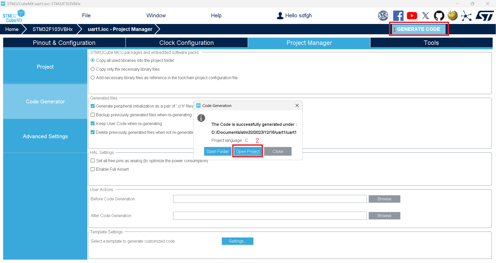
编译代码。编译无误
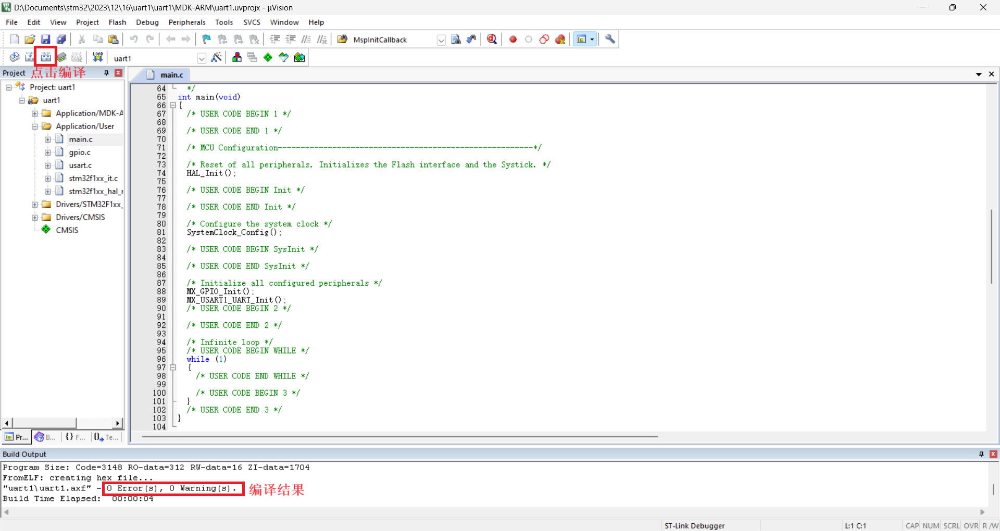
USART串口通信
UART函数库介绍
结构体以及函数定义均在头文件： stm32f1xx_hal_uart.h
UART结构体定义
UART_HandleTypeDef huart1;串口发送/接收函数
HAL_UART_Transmit()：串口发送数据，使用超时管理机制;
HAL_UART_Receive()：串口接收数据，使用超时管理机制;
HAL_UART_Transmit_IT()：串口中断模式发送;
HAL_UART_Receive_IT()：串口中断模式接收;
HAL_UART_Transmit_DMA()：串口DMA模式发送;
HAL_UART_Transmit_DMA()：串口DMA模式接收;串口发送数据：
HAL_UART_Transmit(UART_HandleTypeDef *huart, uint8_t *pData, uint16_t Size, uint32_t Timeout)功能：串口发送指定长度的数据。如果超时没发送完成，则不再发送，返回超时标志（HAL_TIMEOUT）。
参数：
- *UART_HandleTypeDef huart：UART结构体（ huart1）
- *pData：需要发送的数据
- Size：发送的字节数
- Timeout：最大发送时间，发送数据超过该时间退出发送
举例：
HAL_UART_Transmit(&huart1, (uint8_t *)"diyu", 4, 0xffff); //串口发送4个字节数据，最大传输时间0xfff
代码编写
在文件 main.c中的while循环里添加代码
while (1)
{
/* USER CODE END WHILE */
//添加下面两行代码
HAL_UART_Transmit(&huart1, (uint8_t *)"hello windows!\r\n", 16 , 0xffff);
HAL_Delay(1000); //延时1s
/* USER CODE BEGIN 3 */
}VSPD配置虚拟串口
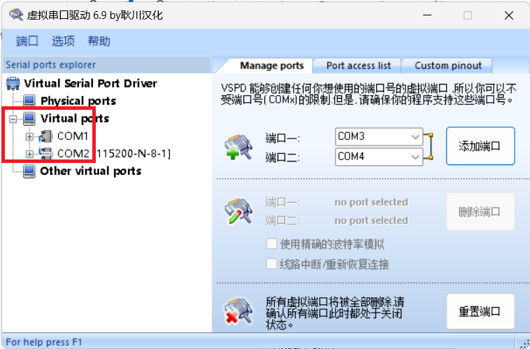
Proteus仿真STM32F103C8
添加 STM32F103C8 和 虚拟终端
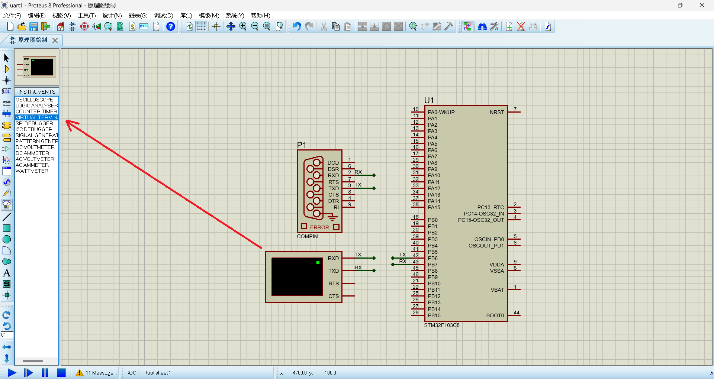
配置STM32单片机参数
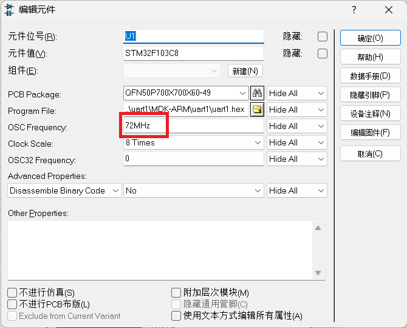
配置虚拟终端参数
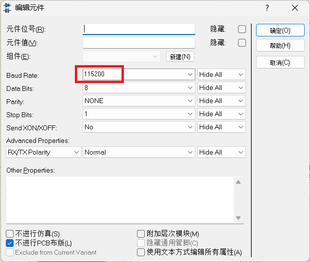
配置COMPIM参数
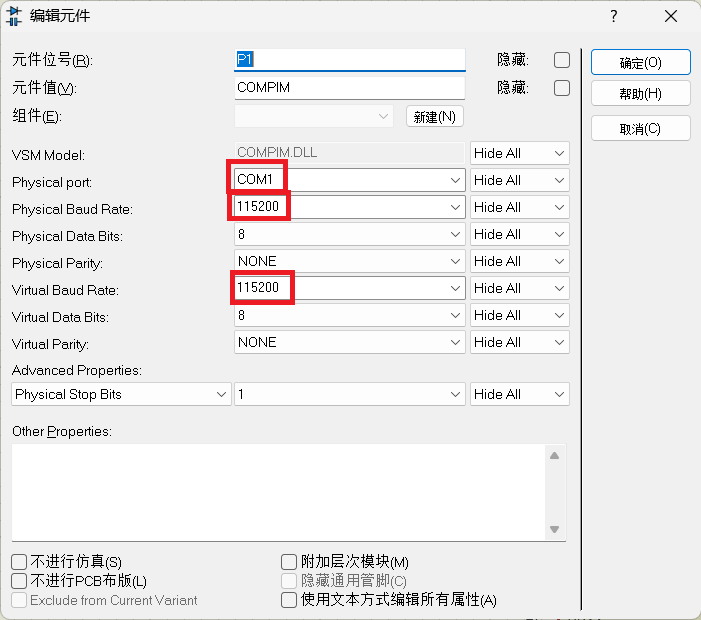
效果展示
编译，将程序烧录或下载进，打开串口助手查看接收到的数据。
波特率、停止位、数据位、校验位要与配置的一致
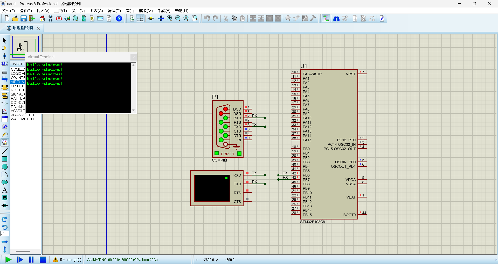
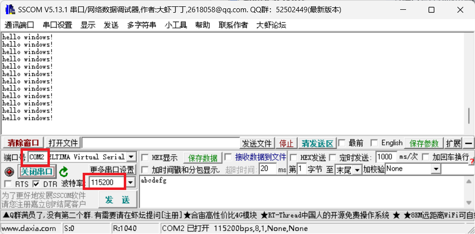
重写输入/输出函数
重写输入/输出函数是在main.c文件中完成的
重写输入/输出函数之前需要先在main.c文件包含一下"stdio.h"头文件
#include "stdio.h"在main.c重写printf函数
int fputc(int c, FILE * f)
{
int ch = 0;
ch=c;
HAL_UART_Transmit(&huart1,(uint8_t*)&ch,1,1000);//发送串口
return c;
}在main.c重写scanf函数
int fgetc(FILE * F)
{
int ch_r = 0;
HAL_UART_Receive (&huart1,(uint8_t*)&ch_r,1,0xffff);//接收
return ch_r;
}参考链接
https://blog.csdn.net/qq_28317769/article/details/106659139